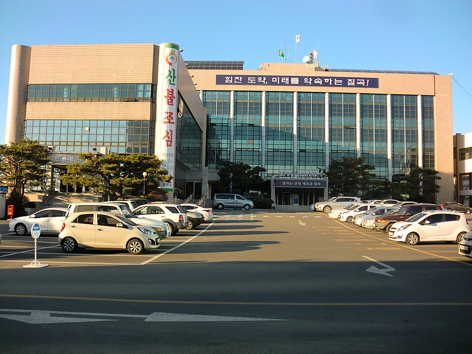

칠곡 검정고시 — 영어·수학이 같이 막힐 때 푸는 순서

검정고시 상담을 하다 보면 “다른 과목은 어떻게든 하겠는데 영어랑 수학이 안 된다”는 말을 가장 많이 듣습니다. 공교롭게도 두 과목이 나란히 어려운 데는 같은 이유가 있습니다. 칠곡 검정고시를 준비하면서 이 둘에 막혀 계시다면, 두 과목을 따로 붙잡기 전에 그 이유부터 보고 가시면 좋겠습니다.
두 과목이 같이 어려운 이유
영어와 수학은 앞의 것을 알아야 뒤의 것을 배울 수 있는 과목입니다. 한 군데가 비어 있으면 그 뒤로 배운 것이 전부 흐릿해집니다. 그래서 지금 진도에서 아무리 열심히 해도 진전이 없는 느낌이 드는 겁니다. 머리가 나빠서가 아니라 순서가 어긋나 있는 것입니다.
해결 방법도 같습니다. 지금 자리에서 더 버티는 대신, 끊긴 지점까지 내려갔다가 다시 올라오는 것입니다. 내려가는 게 손해처럼 느껴지지만 실제로는 가장 빠른 길입니다.
영어: 어디서 끊겼는지부터 찾습니다
- 단어가 안 되는 건지, 문장이 안 되는 건지 — 단어는 아는데 문장 뜻이 안 잡히면 단어를 더 외워도 소용이 없습니다. 반대라면 단어부터가 먼저입니다.
- 기초 문법은 필요한 만큼만 — 문법책을 처음부터 끝까지 떼려고 하면 대부분 중간에 멈춥니다. 문장을 읽는 데 바로 쓰이는 것부터 골라서 합니다.
- 짧은 지문을 자주 — 긴 지문 하나보다 짧은 지문 여러 개가 낫습니다. 읽는 속도는 분량이 아니라 횟수로 붙습니다.
수학: ‘되는 문제’를 늘려 갑니다
수학은 어려운 문제를 붙잡고 있을 때가 아니라, 혼자 끝까지 푸는 문제가 하나씩 늘어날 때 점수가 올라갑니다. 그래서 처음엔 지금 확실히 되는 수준에서 시작해 한 칸씩 올립니다.
계산 연습도 빼놓을 수 없습니다. 오래 손을 놓았다면 개념은 이해했는데 답이 틀리는 일이 반복되는데, 이건 실력 문제가 아니라 손이 굳은 것이라 며칠만 해도 돌아옵니다. 그리고 검정고시는 평균 60점이면 합격이라, 모든 유형을 다 잡을 필요가 없습니다. 자주 나오는 유형을 확실히 하는 쪽이 훨씬 빠릅니다.
한 주에 두 과목을 넣는 법
두 과목을 하루에 몰아넣으면 둘 다 지칩니다. 영어는 짧게 매일, 수학은 길게 며칠이 대체로 잘 맞습니다. 영어 단어와 짧은 지문은 15~20분씩 매일 반복할 때 쌓이고, 수학은 한 번에 30~40분 이상 붙어 있어야 풀이가 이어지기 때문입니다.
그리고 과목 합격제가 있으니 두 과목을 꼭 동시에 끝낼 필요도 없습니다. 먼저 60점을 넘긴 과목은 합격으로 남으니, 한 과목을 먼저 보내 놓고 남은 힘을 다른 과목에 모으는 방법도 충분히 좋은 전략입니다.
칠곡에서 이렇게 함께합니다
저희는 1:1 맞춤 과외라 진도를 학생에게 맞춰 내리거나 올립니다. 필요하면 몇 학년 아래 내용까지 내려가서 시작하고, 거기서 막힘이 풀리면 속도를 올립니다. 반 수업에서는 하기 어려운 부분이고, 영어·수학에서는 이게 결정적입니다. 칠곡과 인근 지역은 방문 수업이 가능하고, 이동이 부담되면 화상(줌) 수업으로 집에서 그대로 진행합니다.